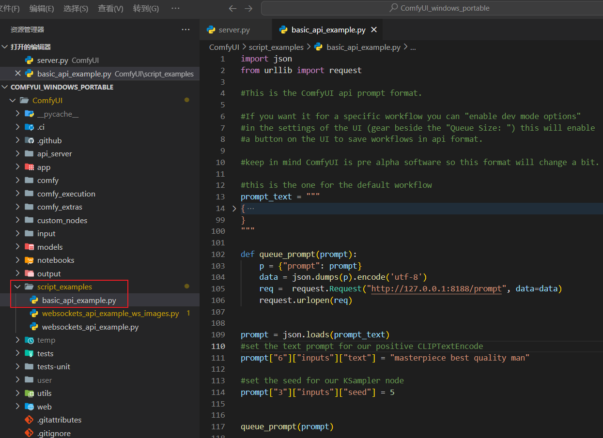

想要去调用 API，咱得先看看人家提供了哪些。这里从两个地方看一下，他们提供了哪些 API
文档地址：Docs - ComfyUI。在官方文档的海洋中找啊找啊，终于见到了她（😄😄😄，人家支持搜索啊）：Routes - ComfyUI
其实上面的截图也就是官方文档中已经给出了接口在代码中的位置：项目根目录的
该章节介绍一下客户端（Postman 、JavaScript 等）如何调用这些 API 。关于 API 的调用，其实

咱先说一下这个场景：最简单的就是告诉他我想生成什么（例如：一只可爱的小猪），之后调用 API 时将内容带上即可（当然，肯定还有很多配置参数，例如：图片大小，生成几张等）。这里有两个关键的因素：一个是 API 地址；另一个是参数的格式是什么。下面以默认文生图工作流为例，展示一下如何调用。从上图中可以得知请求地址为：
如果您的界面没有“导出(API)”这个菜单项，你可以按照下图打开开发者模式（开始没有注意“导出(API)”这个菜单项，开发者模式最开始开启过一次，后面有关闭了，但是还是有“导出(API)”这个菜单项），如下图：
我去这前奏也真够长的，说了这么一大堆还没有到正题，您别急，这不就来了
看看用了几步才拿到想要的图片，一共用了三步（不一定最优）：
请求方式为：
// 请求体（其中 prompt 是“导出（API）”得到的 JSON 文件的内容）
// 这里测试的正向提示词（也就是想要生成的内容）是：A cute little pig
{
"client_id": "可选",
"prompt":{}
}
// 响应体（其中 prompt_id 是后续请求的参数）
{
"prompt_id": "11a28a30-20c8-4cf1-bf00-6796ba3374f6",
"number": 3,
"node_errors": {}
}
请求方式为：
// 响应体，这里只展示了部分内容
// 如果工作流中设置生成的图片数量为 2，那么 images 数组中就会有 2 个元素
{
"11a28a30-20c8-4cf1-bf00-6796ba3374f6": {
"prompt": [],
"outputs": {
"9": {
"images": [{
"filename": "ComfyUI_00007_.png",
"subfolder": "",
"type": "output"
}
]
}
},
"status": {},
"meta": {}
}
}
请求方式为：
上面使用 Postman 测试时有没有发现一个问题：客户端什么时候知道生成图片成功了？官方
这里发现一个问题：如果你的提示词不换，再次点击生成图片时，服务器端会采用上次生成的图片，哪怕你刷新页面都没用。目前还没有找到对应的开关。